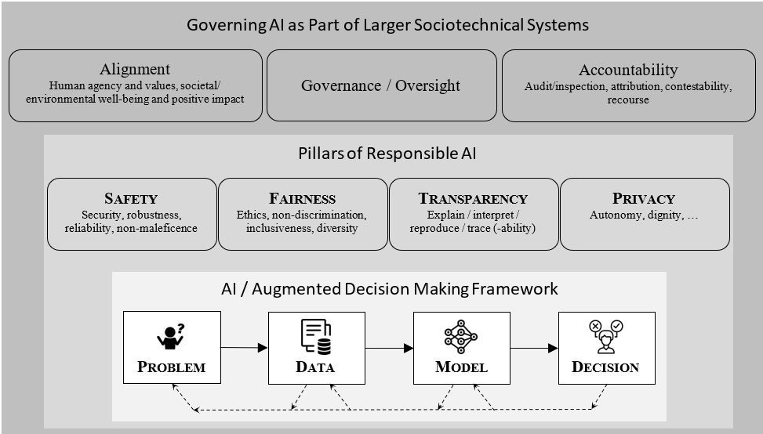

A Human-Centric Framework of Responsible AI#
The Socio-Technical System#
We present a sociotechnical system’s view of how an augmented decision-making system, powered by data and modern ML / AI tools, interact with the society and its various constituents.

The above figure visualizes a three-layer structure of Responsible AI. At the lowest layer, an Augmented Decision Making Framework describes how ML / AI-driven systems can engage in decision making. At the middle layer, four distinct pillars of Responsible AI encompass common ethical considerations of these systems. At the highest layer, AI governance as a part of the larger sociotechnical systems includes imprtant issues such as alignment, oversight, and accountability.
Let’s first consider the ML / AI-driven Augmented Decision-Making Framework, which encompasses a variety of tasks for which AI can be used. This framework can be described by four intuitive aspects: problem, data, model, and decision.
Problem: The first aspect involves clearly defining the problem that needs to be solved, such as identifying fraudulent transactions, forecasting demand, predicting customer churn, and many others.
Data: The next aspect involves gathering and preparing the data that will inform the AI model. As we all understand very well, quality data is foundational for effective decision-making.
Model: This aspect focuses on developing (training) the AI model that will analyze the data and generate predictions or insights.
Decision: The final aspect involves using the model’s output to make informed decisions. This step translates AI model outcomes into actions.
There has been a lot of development on various AI approaches over the past several decades with some amazing progress. However, it is becoming apparent that the focus of traditional AI approaches on performance and efficiency can have critical limitations and challenges, especially on ethical, societal, and legal dimensions. The need for Responsible AI arises from these limitations and challenges.
So, what exactly is Responsible AI? At a very high level, responsible AI encompasses the ethical use of AI technologies, and there have been quite a few frameworks proposed for how to think about it. These frameworks have been put forward by technology leaders, consulting companies, standards bodies, and government agencies. However, the most common capabilities of Responsible AI that almost everybody seems to agree upon include: safety, fairness, transparency, and privacy.
Thus, broadly speaking, Responsible AI refers to the development and deployment of artificial intelligence systems in a manner that systematically supports the following capabilities (or pillars): safety, fairness, transparency, and privacy. These capabilities in and of themselves are not necessarily unique to AI systems, but they do represent some significant additional challenges that are highly AI-specific.
Safety: AI systems could be susceptible to errors, unexpected inputs, adversarial attacks, and other attempts to corrupt, compromise, or misuse the system. To name just a few examples, it is becoming quite apparent that AI can be weaponized for cyberattacks, for creating sophisticated phishing schemes, and for automating the spread of misinformation.
Fairness: AI systems can perpetuate or amplify existing biases in data, resulting in unfair treatment and discrimination in areas like hiring, law enforcement, lending, healthcare, and many other instances.
Transparency: The AI-based decisions are increasingly consequential. Thus, it is important to make sure that the decisions made by AI systems are understandable and explainable (especially if an AI system makes a decision that seems unfair or unusual). Many traditional AI models operate as “black boxes,” making it difficult to understand how decisions are made.
Privacy: Traditional AI may not adequately address data privacy concerns, especially when handling sensitive information. The vast amounts of data used to train AI models pose significant risks to individual privacy. For instance, such data can be targeted for theft/disclosure, leading to breaches of sensitive information. Also, AI technologies can enhance surveillance capabilities, leading to increased privacy concerns.
These key Responsible AI capabilities can have distinct and nuanced impacts for each component of the underlying AI development framework. For example, let’s consider fairness considerations throughout this framework:
From the perspective of Problem formulation, we may need to:
Identify our fairness ideals by understanding social reality that we operate in (as we know, different cultures may have significant differences in what is considered fair);
Define or choose quantifiable metrics that map to our fairness ideals;
Understand tradeoffs between different fairness metrics. We know from academic research that certain fairness metrics are incompatible with one another.
From the perspective of Data, we will likely need to have:
Methods for bias detection in data;
Data preprocessing techniques for bias reduction;
After seeing the extent of bias in our data, we may want to change processes for collecting less biased data to begin with.
From the perspective of Model building, we need to have
Fairness-aware AI-based modeling techniques, which could be implemented via:
Data pre-processing, by altering (debiasing) input data;
Modifying the learning algorithm, to inject fairness-awareness directly into the learning process;
Outcome post-processing, e.g., by changing how AI predictions are made for different user sub-populations.
And, there are additional complicating factors, such as known tradeoffs between some fairness metrics and predictive accuracy, as well as between fairness and explainability. Thus, these tradeoffs will need to be managed.
From the perspective of Decision making, an example of interesting challenge is whether we should use AI-based outputs in an automated OR in an advisory manner? For example, using human in the loop could (a) serve as an additional check to ensure fairness OR (b) could potentially re-introduce unfairness via human decision-making biases.
And, similarly to Fairness, we could take other Responsible AI pillars and see the distinct impacts that they can have on the underlying AI development framework. By systematically addressing each aspect—problem, data, model, and decision—using Responsible AI capabilities, we can create a robust AI-based decision-making application that is both effective and responsible.
Finally, it is crucial to understand that just having Responsible AI capabilities is not sufficient. An AI-based solution (such as a criminal risk prediction model or health insurance fraud prediction model) is typically a component in a larger sociotechnical system, and therefore it is important to have a clear legal/regulatory/policy/standard-based approach to governing AI and ensuring these capabilities. We refer to it as governance and oversight, which include formal frameworks, policies, and practices that regulate and guide the development, deployment, and management of Responsible AI systems.
However, there two key notions that deserve a special consideration and have a direct impact on the strategic design of AI-based solutions: Alignment and Accountability.
Alignment: The process of ensuring that AI systems’ objectives, behaviors, and outcomes are in harmony with human values, ethical standards, and societal goals. For a given setting or an application domain, this could mean deciding what specific values / goals / objectives / standards / behaviors are formally mandated (and implemented via the underlying Responsible AI capabilities).
Accountability: AI systems/solutions should be accountable and answerable. We all understand very well that, in most real-world applications, no AI model can be expected to be perfectly accurate. How do we deal with situations where we suspect that the model made an erroneous prediction or exhibited systematic unfairness? Thus, it is important to establish explicit/formal accountability mechanisms for AI decision-making processes through the ability to do meaningful inspections/audits, to have clear traceability and attribution for various decisions made, and then – this being a true sociotechnical system – to have pathways for contesting the (potentially incorrect or unfair) outcomes and have corresponding remediation and recourse.
Where does this governance come from? Governments and regulatory bodies are beginning to develop and implement regulations surrounding AI usage. Unfortunately, like with many other technologies, the legal frameworks are significantly behind with numerous AI advances. Thus, much of the AI governance priorities are currently being set inside individual companies, driven by Boards of Directors, senior management, data science teams, internal ethics/advisory boards, legal departments, HR departments, and some external stakeholders.
Finally, we also need to recognize the sheer scope of Responsible AI spectrum:
On one extreme – in our everyday business applications, our Responsible AI challenges could be simply to provide sufficient explainability or to ensure fairness of a simple prediction model (say, of a product recommendation system on an e-commerce platform).
On the other extreme, nowadays, serious discussions are also happening on much more major issues, like: should we treat generative AI and foundation LLM models similarly to how we treat nuclear technologies, due to their potential for significant, widespread consequences? There have been increasing concerns regarding Generative AI potential capabilities of producing harmful misinformation, deepfakes, or automated weaponry that could lead to potential dramatic changes to economies and societal structures – and possibly all the way up to existential threats for humanity, according to some doomsday scenarios.